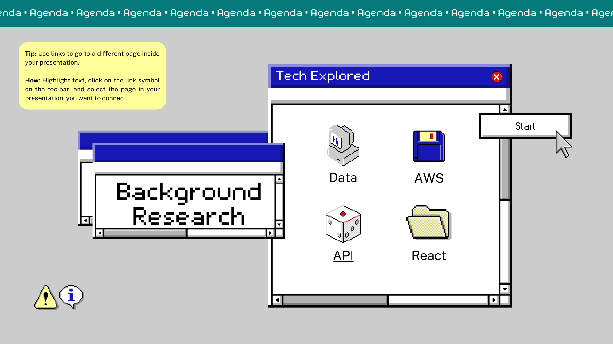
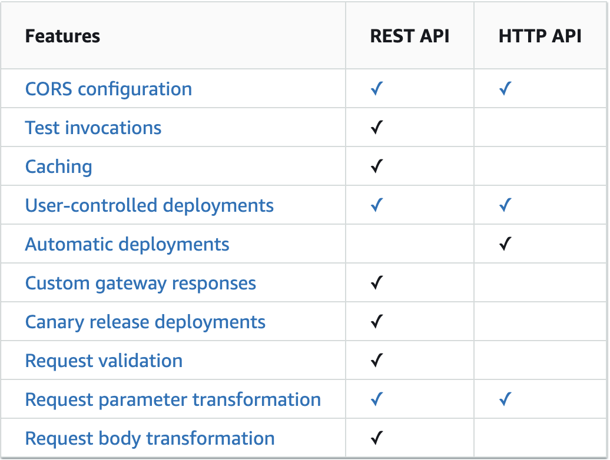
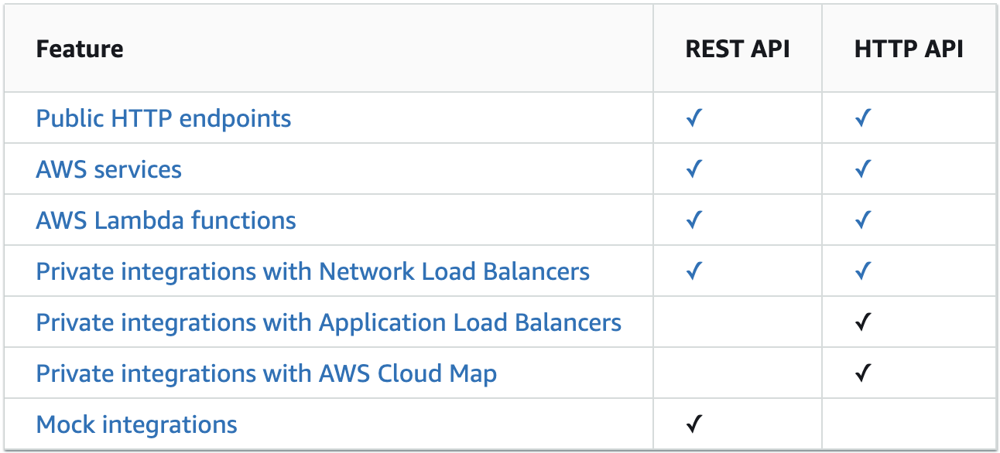

Background Research
Data and Resources
- Clinical Trials Sites
- News/Articles
- PubMed
- MedRxiv
- Healthcare news sites
- Taxonomy
- SNOMED
- MeSH
- Connection in the medical field: Dr. Song
Tech for Frontend
- React for user interface
- API Gateway to handle requests and responses
- AWS Lambda for the backend logic to fetch data from DynamoDB
Frontend Framework: Why React?
Other front-end frameworks: Vue.js, Ember.js, or Angular.js
- Responsive user interface for website, web and mobile app
- Flexible - can easily create web apps and transform them into mobile apps
- Easier to learn
- Fast - you can start development instantly, and provides resources for developing reusable and easily integrable UI components that reduce development time
- Great documentation - broad community support
Why use RESTful API over GraphQL?
- A fixed set of resources and endpoints (Web URL Structure: domain/condition/trial name/number): RESTful APIs have a clear structure, with resources being identified by URIs and accessed using standard HTTP methods. This makes it easy to understand how the API works and how to interact with it, which is particularly useful when the resources and endpoints are well-defined and unlikely to change.
- Support caching: RESTful APIs rely on standard HTTP caching mechanisms, which makes it easy to cache responses and improve performance. Caching is not built-in to GraphQL, but can be implemented with additional libraries.
Why use REST API over HTTP API (both offered by AWS API Gateway)?
Development:

Integrations:

Why AWS?
- Wide range of services: AWS offers a wide range of services, including storage, databases, analytics, machine learning, and more. This means that you can find the services you need to build and run your application in one place, and that you can easily integrate them together.
- Scalability: AWS allows you to easily scale up or down your resources as needed, which means that you can handle sudden spikes in traffic or usage without having to make significant investments in infrastructure.
- Cost-effectiveness: AWS provides a pay-as-you-go pricing model, which means that you only pay for what you use.
- Most familiar to us :)